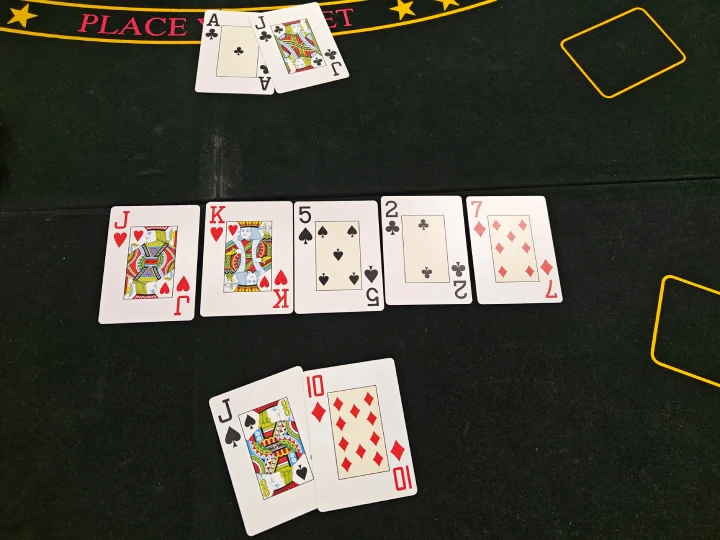
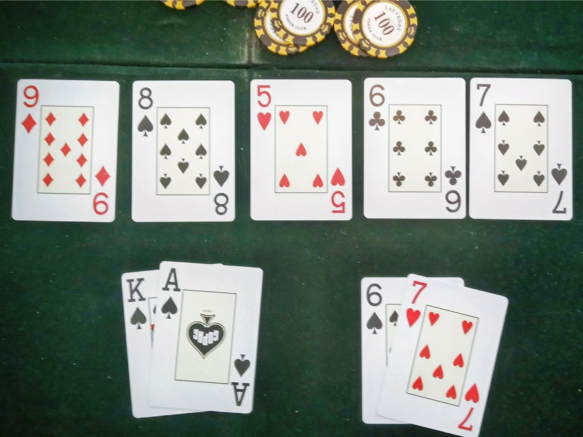

Rules of Texas hold 'em
Texas hold 'em is played with each player receiving two private cards, called hole cards, while five shared community cards are dealt face-up on the table. Players form the best possible five card poker hand using any combination of their two hole cards and the community cards. The goal is simple: win chips by either having the strongest hand or convincing your opponents to fold.
The Flow of the Game
A hand of Texas hold 'em is divided into four betting rounds:
Pre-flop: Players receive their two private hole cards. No community cards
are on the table yet. Before the
action
begins, two players, the small blind and the big blind, are required to post a predetermined amount to
ensure there is
money in the pot. These positions are located immediately to the dealer's left, and the big blind is usually
twice the
size of the small blind. Once the blinds are posted and all players have their hole cards, action continues
clockwise
starting from the player to the big blind's left.
Flop: Three community cards are dealt face-up. A betting round follows.
Action starts on the small blind and
moves
clockwise around the table.
Turn: A fourth community card is dealt. Another betting round takes place,
again starting on the small blind
and moving
clockwise.
River: The fifth and final community card is dealt. The last betting round
is played with the same order as
the previous
two rounds. Lastly, showdown takes place where the players still in the
hand show their cards and determine
the winner.
There are five actions players can take during each betting round, depending on the situation:
Check: Pass the action to the next player without betting, as long
as no bet
has been made. A player tapping the table indicates a check.
Bet: Put chips into the pot when no one else has bet yet.
Call: Match the current bet to stay in the hand.
Raise: Increase the size of the current bet, forcing others to call
or
fold.
Fold: Give up the hand and any chance to win the pot.
Winning the hand
A hand can be won in two ways: by revealing the best hand at showdown or by making all opponents fold. If two or more players reach showdown, they compare their five-card hands according to the official poker hand rankings, which can be viewed here. If hands are equal, known as a chop, the pot is split evenly among the players.


Handling your cards and chips
Your hole cards are private, don't show them to other players while a hand is in progress. You may check your cards at any time, but always do so discreetly to ensure no one else can see them. Keep your cards face down on the table at all times and clearly visible, don't hide them behind your chips or lift them from the table. To protect your cards and prevent the dealer from mistakenly thinking you have folded, it is recommended to place a single chip or some other small object on top of them as a card protector.
When you decide to fold, slide or gently toss your cards forward toward the dealer or the muck (a pile of discarded cards). If the hand ends at that point and you wish to show your cards, you may do so, but you are never required to show your cards when folding.
Your chips should always be kept in neat, clearly visible stacks, ideally 20 chips per stack. Do not hide larger denomination chips behind smaller ones; all players must be able to easily see how much you have in play.
Betting must be done in one clear action. Something often seen in movies is first calling a bet and then raising. This is called string-betting and not allowed in real poker. Instead you should put in the raising chips in one motion. Alternatively you can verbally announce your action and then take your time counting the chips and adding them to the pot. Verbal declarations are binding, meaning, for example, if you say "raise", you are committed to raising. And a raise must be at least equal to the amount of the previous bet or raise. Beginners are recommended to announce all their bets out loud until they feel confident handling their chips.
The one chip rule: if you place a single chip into the pot without verbally declaring a raise, it is considered a call. Even if the chip is of higher value than the current bet. To raise with one chip, you must announce "raise" first.
A player may always call a bet by going all-in, meaning they put all their remaining chips into the pot, even if they have fewer chips than the amount required to fully call. In this case, they are considered all-in for the amount they have left. The all-in player can only win the portion of the pot they have contributed to (the main pot). Any additional bets made by remaining players go into a side pot, which only those players can win.
Poker Etiquette
Besides the official rules, there are a few unwritten guidelines that keep the game fair and enjoyable for everyone.
First and foremost, don't slow-roll! Taking unneccesary time to reveal the winning hand just to create suspense is a classic movie trope and a common rookie mistake. But also one of the most disrespectful things you can do at a poker table. When you have the winner at showdown, don't wait around; reveal both of your cards promptly.
Respect the flow of the game. Act only when it's your turn and avoid delaying the game without a reason. Taking your time with big decisions is allowed, within reason. Other players can call the clock on you if you take too long before acting. Respect other players and the dealer. Don't unneccesarily needle your opponents after they lost a hand or made a suboptimal play. Don't blame the dealer for receiving bad cards.
Don't discuss your hand during play. Do not reveal what you held or folded while others are still in the hand as this would give the players information they shouldn't have. Save your comments until the hand is over.